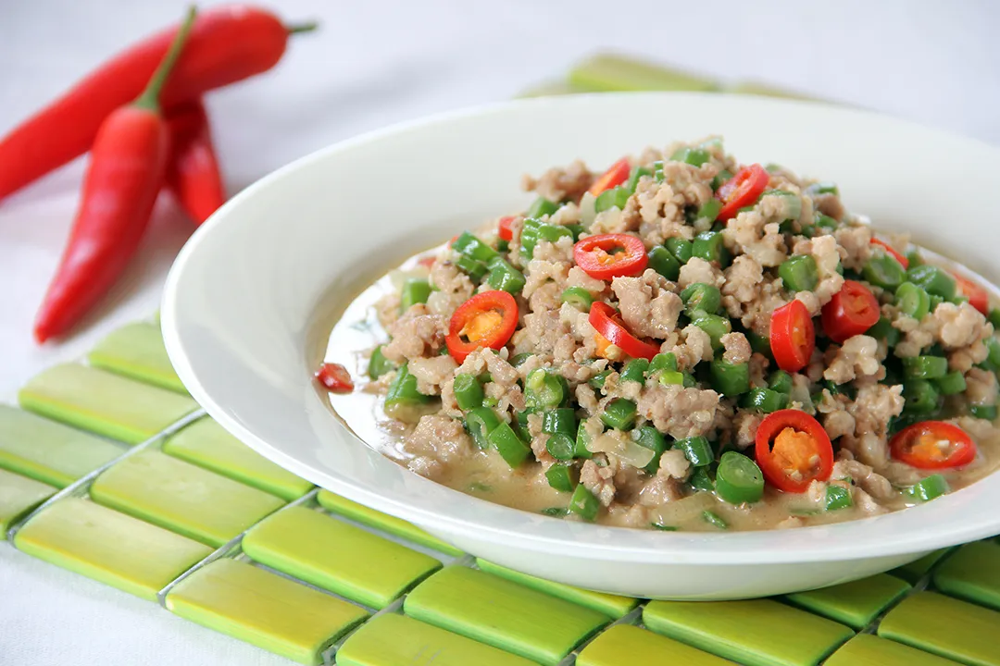

Gising Gising Recipe

Ingredients:
- 1 lb ground pork
- 2 tbsp cooking oil
- 1 medium onion, chopped
- 3 cloves garlic, minced
- 2 long green chili peppers, sliced (adjust to taste)
- 1/2 cup coconut milk
- 1/4 cup bagoong (fermented shrimp paste)
- 1 cup kangkong (water spinach), chopped
- 1/2 tsp ground black pepper
- 1 tbsp soy sauce
- 1/2 cup chicken broth
- Salt to taste
Instructions:
- Heat oil in a large pan over medium heat. Sauté garlic and onions until fragrant and softened.
- Add the ground pork and cook, stirring occasionally, until browned.
- Stir in the chili peppers and cook for another minute.
- Add the bagoong (shrimp paste), soy sauce, and ground black pepper. Stir well.
- Pour in the chicken broth and bring to a simmer for about 5 minutes.
- Stir in the coconut milk and bring to a gentle simmer. Let cook for another 5-7 minutes until the sauce thickens slightly.
- Add the kangkong (water spinach) and cook for another 2-3 minutes or until the spinach is tender.
- Season with salt to taste. Serve hot with steamed rice. Enjoy!
Back to Menu